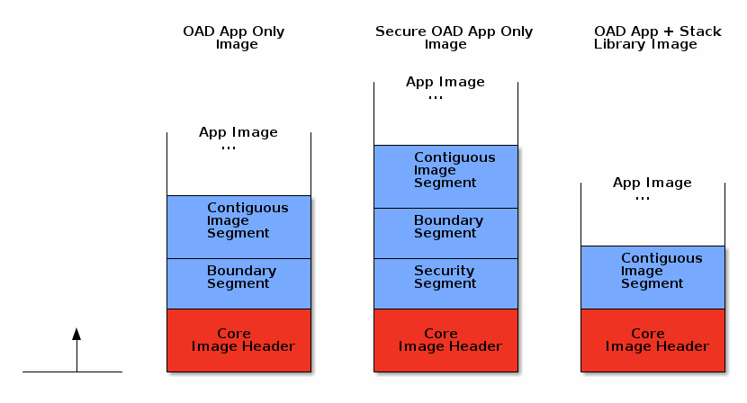

OAD Image Header¶
All firmware images delivered via OAD are in binary format and contain an image header. The information in the image header is used by the application and BIM to determine the suitability of an image for download or loading. In order to prevent this information from being calculated multiple times all TI OAD images use a standard image header.
This section explains the various fields within the image header and what they mean.
TI provides a tool to generate an OAD ready image, it is called OAD Image Tool. By default, this tool runs as a post-build step of all OAD enabled projects.
OAD Image Header Overview¶
The OAD image header is made up of two parts:
The core image header which is fixed and mandatory for all OAD images
The image segments which are optional and used to describe specific types of images
The OAD image header is composed of a core header and segments. The core header is required and common to all OAD image headers. The image segments are optional and may be different for a given OAD use case (i.e. on-chip vs off-chip OAD).
The image below illustrates the makeup of an image header, and compares two types. When added to an image by the OAD Image Tool the OAD core header and segments are packed together sequentially.
Note
In general it is not necessary for the customer or user to manually add or modify segments. The segments should be populated and packed out of the box by the TI oad_image_tool. The images above show a sampling of the potential image header + segment configurations. All potential configuratiions are not shown, depending on the selected build configuration and project, the segments present may be different.
OAD Core Image Header¶
The core header contains the essential information required for all types of OAD across all supported wireless stacks. The core header must be present as the BIM relies heavily on it to boot and OAD image.
Table 39. below shows a description of the core image header.
Field |
Size (in bytes) |
Description |
|---|---|---|
OAD Image Identification Value |
8 |
Unique number to identify the start of an OAD image |
CRC |
4 |
Cyclic Redundancy Check |
BIM Version |
1 |
Version required to support image format |
Image Header Version |
1 |
Version of image header contained in image |
Wireless Technology |
2 |
Type of connectivity used in image |
Image Information |
4 |
Image information bytes |
Image Validation |
4 |
Check if image is valid to run |
Image Length |
4 |
The total length of the image including header |
Program Entry Address |
4 |
Application startup entry address |
Image Software Version |
4 |
Software version of the image |
Image End Address |
4 |
End address of the image |
Header Length |
2 |
Total length of the image header |
The core header is defined in oad_image_header.h in the struct
imgFixedHdr_t.
Each entry from Table 39. are described in the following sections.
OAD Image Identification Value¶
The OAD Image Identification Value for the CC13xx or CC26xx is set based on the
DeviceFamily_* defined that is provided by the SDK. The value is using the
the OAD_IMG_ID_VAL define. Note the protocol specific implementation OAD
should check that the OAD_IMG_ID_VAL field matches between the image
currently resident on the device and the incoming image.
The OAD Image Identification Value serves two purposes:
Provides the application a quick way to identify if it is receiving the correct image.
Provides a means for the BIM to find the flash page containing the start of OAD image for on-chip OAD
Note
It is recommended that the customer customize the image identification field to uniquely identify their product.
CRC¶
The cyclic redundancy check (CRC) is a means to check the integrity of an image. This must be done in two steps. First the CRC must be calculated when the image is generated from the toolchain (by the OAD Image Tool), this will be stored in the CRC field within the image header.
Later, once the target has received the OAD image, CRC will be recalculated to determine if the image has been corrupted during transfer.
If the CRC is equivalent before and after the OAD, the target can assume that the image was not corrupted while sending over the air.
A CRC-32 algorithm is used to calculate the CRC. This algorithm results in a 1 in 232 chance of collision. This allows for a 99.9999% error detection rate. In addition to this CRC, transfers through the protocol transport are also protected by a CRC. So the risk of an undetected data corruption is reduced even further.
BIM Version¶
The BIM Version byte is used to determine whether or not the image is compatible with the version of BIM that is running on the device.
Image Header Version¶
The image header Version byte is used to determine whether or image contains image header that is compatible with the current version of the application and BIM.
Wireless Technology¶
The Wireless Technology field in the image header describes what technology is used in the image to be downloaded. Multiple technologies can be selected here if the device used supports multiple technologies. These fields are added for future expansion. Bits are set to 1 by default. To select the Wireless Technology field, set the appropriate bit(s) to 0.
Bit Number |
Type |
Hex Value |
|---|---|---|
0 |
Bluetooth Low Energy |
0xFFFE |
1 |
IEEE 802.15.4 (Sub-1 GHz) |
0xFFFD |
2 |
IEEE 802.15.4 (2.4 GHz) |
0xFFFB |
3 |
Zigbee |
0xFFF7 |
4 |
RF4CE |
0xFFEF |
5 |
Thread |
0xFFDF |
6 |
EasyLink |
0xFFBF |
7 |
MIOTY |
0xFF7F |
8 |
Wireless BMS |
0xFEFF |
9-15 |
Reserved |
N/A |
Image Information¶
The Image Information provides details about the OAD image status and type. The format is as follows:
Byte Number |
Item |
Description |
|---|---|---|
0 |
Image Copy Status |
0xFF: Default status, no action needed
0xFE: Image to be copied to on-chip flash at location indicated in the image header
0xFC: Image copied
|
1 |
CRC Status |
0xFC: CRC Invalid
0xFE: CRC Valid
0xFF: CRC Not Calculated Yet
|
2 |
Image Type |
Device Images (0x00-0x15)
0x00: Persistent application (for On-chip OAD)
0x01: Application
0x02: Stack
0x03: Application & Stack Merged
0x04: Network Processor
0x05: Factory Image
0x06: BIM
0x07: App & Stack Combined (App/Stack_Library)
0x10-0xFF: Reserved
|
3 |
Image Number |
Image number if more than one type is stored
0xFF: Default
0x00-0xFE: Image number
|
Note
Image type 0x03 (Application & Stack Merged) is different from 0x07 (App & Stack Combined). Image type 0x03 refers to the case where app and stack are build as separate split images and combined using a hex merging tool. Image type 0x07 refers to a app and stack being built as a single executable.
Note
BIM will not try to interpret user data/application (anything with image type > 0x10).
Attention
The OAD Image Tool currently only supports the following image types: 0x00-0x03, 0x07.
Image Validation¶
The image validation field is used by the BIM to switch back and forth between the user application and target image, without corrupting the current image header. This field is only used with on-chip OAD.
Image Length¶
The Image Length field is the total length of the executable portion of the image in bytes. Image length is calculated by the OAD image tool using the following equation:
Note that the tool will pad the image length to be word aligned, updating the length if needed.
Note
imgEndAddr: Last used address in flash
imgStAddr: The first address used in flash (starts at
_imgHdr.imgID)
Program Entry Address¶
The Program Entry Address is a pointer to the application interrupt vector table or application program entry address. This provides flexibility so that if the program entry address changes between images, BIM will still be able to use this field to run the application.
Software version¶
The Software Version field is used to keep track of the application and stack revision contained in the image. This field follows the following format:
These values are assigned as shown in the table below.
Byte Number |
Description |
|---|---|
3-2 |
Stack version |
1-0 |
Application version |
For example an image with app version 1.0 and stack version 3.0 would be
designated as: {'3', '0', '1', '0'}. This field is to be set by the user in
their header implementation. (i.e. oad_image_header*.c)
Image End Address¶
The Image End Address is the last address in flash occupied by the image.
Header Length¶
The Header Length is the length of the core portion of the header. This is up to
and including the rfu2 field in the structure defined in
oad_image_header.h.
OAD Image Header segments¶
The segment structure was designed to make the current OAD implementation flexible and extensible. This makes it possible to expand the image header vector as features are added to the OAD implementation without breaking the existing system.
Field |
Size (in bytes) |
Description |
|---|---|---|
Boundary Information |
24 |
Contains information about RAM and Flash boundaries |
Contiguous Image Information |
12 |
Contains information about image to be downloaded |
Security Information |
85 |
Contains image signature and related information |
Note
The current implementation only supports images of contiguous type, thus this segment is required.
The boundary segment is optional and only required for split image types.
Segment Header¶
Each segment has a common header structure. This is useful when parsing an image for segments. The header structure is used by all segments. The common header will be documented below so it does not have to be repeated for each segment type.
Field
Size (in bytes)
Description
Segment type = X
1
Segment header op-code
Wireless technology
2
Same options as in the main wireless technology table above. Only one bit may be set here.
Reserved
1
Default is set to 0xFF
Payload length
4
The length of the segment in bytes
Segment Type¶
The segment type field is a one byte op-code that is useful in identifying the segment type.
Wireless Technology¶
This is the type of wireless technology that is contained in the segment. Each segment may be built for only one wireless tech, thus only one bit can be set in this field.
Reserved¶
This field is currently unused and existing designs should not rely on this field.
Payload Length¶
The length of the entire segement in bytes.
Boundary Information Segment¶
The Boundary Information field is intended for split image type OAD (where the application and stack are separate images) and is optional. The boundary segment provides information to BIM on the flash and RAM boundaries of the image and its associated wireless stack image.
This information is formatted in the following way:
Item |
Size (in bytes) |
Description |
|---|---|---|
Segment type = 0 |
1 |
Tells the BIM that the following fields provide RAM and stack boundary information |
Wireless technology |
2 |
Same options as in the main wireless technology table above. Only one bit may be set here. |
Reserved |
1 |
Default is set to 0xFF |
Payload length |
4 |
The length of the boundary information field in bytes |
Stack Entry Address |
4 |
Stack entry address |
ICALL_STACK0_ADDR |
4 |
Stack boundary address |
RAM_START_ADDR |
4 |
Start address of RAM |
RAM_END_ADDR |
4 |
End address of RAM |
The boundary segment is defined in oad_image_header.h in the struct
boundarySeg_t. See this structure in Doxygen for more information.
Stack Entry Address¶
This is the entry point to the stack image, required when the app and stack are of split image type.
Stack Boundary Address (ICALL_STACK0_ADDR)¶
The address of the app/stack boundary. This is the lowest address occupied by the stack.
Lower RAM Boundary (RAM_START_ADDR)¶
The lower address of the RAM region reserved by the stack image.
Upper RAM Boundary (RAM_END_ADDR)¶
The upper address of the RAM region reserved by the stack image.
Contiguous Image Information Segment¶
The Continuous Image Information field provides information about the image to be downloaded during the OAD process. The information is formatted in the following way:
Item |
Size (in bytes) |
Description |
|---|---|---|
Segment type = 1 |
1 |
Tells the BIM that the following fields provide information about the image payload |
Wireless technology |
2 |
Same options as in the main wireless technology table above. Only one bit may be set here. |
Reserved |
1 |
Default is set to 0xFF |
Image Segment Len |
4 |
The length of the continuous image segment in bytes |
Image Start Address |
4 |
Address of executable image data |
The contiguous image segment is defined in oad_image_header.h in the struct
imgPayloadSeg_t. See this structure in Doxygen for more information.
Image Start Address¶
The starting address of the contiguous image segment. The information in this segment will be filled in sequentially from the start address.
Security Information Segment¶
Images that are built using the secure OAD feature will contain a security information segment as part of the image header. The format of the security segment is shown below
Item |
Size(in bytes) |
Description |
Segment type = 3 |
1 |
Tells the BIM that this segment contains security info. |
Wireless technology |
2 |
Same options as in main wireless technology table above. Only one bit can be set here. |
Verification status |
1 |
Default is set to 0xFF. 0xFC indicates that sign verification fails 0xFE indicates successful verification |
Payload len |
4 |
The actual length of the security information bytes + length of the structure |
Security payload |
variable |
Structure will include security algorithm type and data about its various components |
The security payload strcture is defined below:
Item |
Size(in bytes) |
Description |
Version |
1 |
0x1: ECC P-256 raw public key 0x2-0xFF: reserved |
Timestamp |
4 |
Timestamp |
certificate payload |
Variable |
8 byte signer info,
64 byte public key
See |
The security structure is defined by securityInfoSeg_t in
oad_image_header.h
Verification status¶
Tracks whether or not the BIM has verified the signature embedded in the image. Once a signature has been checked and is validated or invalidated, the result will be stored in the flag and not calculated again.
Security Version¶
Indicates which signing algorithm was performed on the image. At this time only ECDSA P-256 signatures are supported. In the future other algorithms may be supported, other values for the version field are considered RFU.
Security Timestamp¶
Intended to provide a timestamp on an image to prevent relay attacks. Not used at this time.
Certificate Payload¶
The certificate payload is a combination of two fields
Security signer information: 8 bytes of SHA2 hash
Image signature: 64 bytes of signature as calculated by ECDSA algorithm